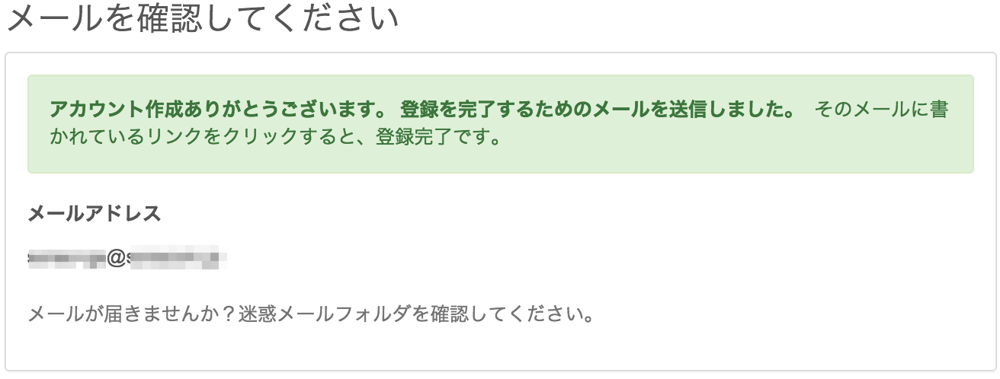

SORACOM アカウントの作成方法をゼロから学びます。
できるようになる事
- SORACOM アカウントの取得
- SORACOM のサービスを利用する際に必要となる「支払い方法」の登録
このハンズオンでサポートしない事 (前提知識)
- パソコンの操作やインターネットへの接続方法
このコンテンツの進め方
ページの内容を読み、また作業を行ったら右下の［Next］を押して次のステップへ進みます。また、［Back］を使って戻ったり、左のナビゲーションメニューでもページの移動が可能です。
左上の［×］を押してコンテンツを終了することができます。また、ページを開きなおすことで再開できます。ページのアドレスはブラウザの［履歴］メニューを利用してください。
ソースドキュメントはこちら
SORACOM アカウントを作成するにあたり、以下のものを用意、もしくは、確認・検討ください。
パソコン、 ブラウザー、インターネット接続環境 | SORACOM ユーザーコンソールにアクセスする環境です。 Google Chrome 等の最新ブラウザーをお使いください。スマートフォンやタブレットでは操作が完了できない場合があります。 また、社内システム設定等のアクセス制限がある場合は解除できるようにしてください。 |
メールアドレス | SORACOM ユーザーコンソールへログインする際の ID となります。 また、アカウント作成を完了するための確認メールや、パスワード再発行時の通知等、ソラコム側からの重要な連絡にも利用されます。そのため、すぐに見られる有効なアドレスを指定してください。 複数の方への通知が必要な場合は、メーリングリストのご利用をご検討ください。アカウント作成後に変更できます。 |
パスワード | SORACOM ユーザーコンソールへログインする際のパスワードとなります。 8 文字以上で半角の英大文字（ アカウント作成後の変更や、忘れてしまったとしても再設定が可能です。 |
契約者情報 | 作成するアカウントの種類を個人もしくは法人のどちらかを選ぶことになります。 個人アカウントから法人アカウントへの切り替えは、アカウント作成後にオンラインで変更いただけます。 |
連絡先情報 | SORACOM を利用するご契約者の情報となります。 個人として利用する場合は名前、電話番号、住所をご用意ください。法人として利用する場合は追加で会社名、部署名が必要となります。また、名前は主担当者の氏名を使用してください。 |
クレジットカード | SORACOM のサービス利用料のお支払い先として登録いただきます。 ご利用いただけるカードのブランドは Visa / MasterCard / American Express / JCB です。プリペイドやデビットカードは利用できません。カード番号や有効期限の他、カード名義、セキュリティコードが必要となります。支払い先は、アカウント作成後にオンラインで追加・変更することがもできます。 |
SORACOM ユーザーコンソールへアクセス
SORACOM ユーザーコンソールは、ソラコムのホームページの右上 User Console をクリック、もしくは、直接ユーザーコンソールを開くことで表示できます。
SORACOM ユーザーコンソールのログイン画面が表示されたらアカウントを作成をクリックします。
カバレッジタイプの選択
カバレッジタイプ Japanをクリックします。
情報入力
カバレッジタイプを選ぶと情報入力画面が表示されます。以下を確認しつつ情報を埋めてください。
*となっている項目は必須入力となっています。- メールアドレス、パスワード、契約者情報、住所等は準備しておいた情報をご利用ください。
- 利用規約およびフィルタリングサービスの確認は、それぞれ内容を確認し同意できたらチェックをつけます。
- 最後にアカウントを作成をクリックします。
登録に使用したメールアドレスにメールを送信した事が表示されます。

メールを確認する
メールソフトを開き、[SORACOM]ユーザー登録の確認という件名のメールを開きます。
そして、メール本文のリンクをクリックしてください。確認処理が行われた後、 SORACOM ユーザーコンソールのログイン画面に遷移します。
SORACOM ユーザーコンソールへのログイン
SORACOM ユーザーコンソールが表示されたら、アカウント作成に使用したメールアドレスとパスワードを利用してログインをします。
ログインに成功すると SORACOM ユーザーコンソールの SIM 管理画面が表示されます。
アカウント作成直後では SIM 等の登録が無いためSIM が見つかりませんと表示されますが正常です。
画面上部の今すぐ設定してください、もしくは SORACOM ユーザーコンソール右上のメールアドレスが表示されているボタンをクリックすると現れるお支払い方法設定から進みます。
新しいクレジットカードを登録をクリックします。
表示されたフォームに、準備しておいたクレジットカード情報を入力し、最後に登録をクリックします。
- 全ての項目が必須入力となっています。
- 有効期限は「月/年（下 2 けた）」の順で入力してください。2025 年 12 月であれば
12と25となります。
登録に成功すると登録済みのクレジットカード情報が表示されます。登録したクレジットカードは下 4 桁のみを表示しています。
これで SORACOM ユーザーコンソールが利用可能となりました。これ以降の操作方法について解説します。
各種メニューの表示の方法
SORACOM の通信やサービスの設定、 SIM やデバイスの発注をするためのメニューは SORACOM ユーザーコンソールの左上のMenuから進むことができます。
ログアウトの方法
SORACOM ユーザーコンソールからのログアウトは、右上のメールアドレスが表示されているボタンをクリックすると現れるログアウトを使用します。

以上で SORACOM アカウントの作成は終了です。